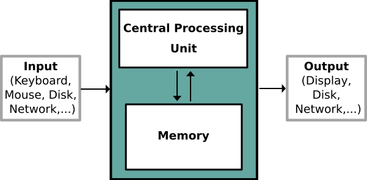
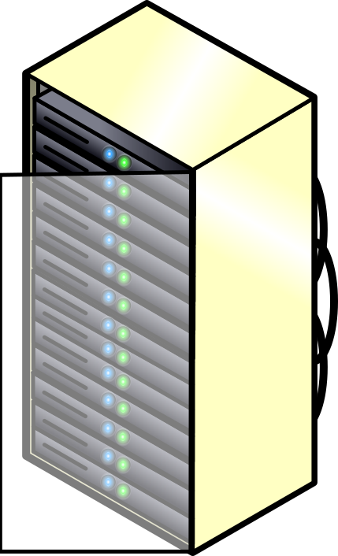
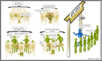

All in One View
Content from Why Use a Cluster?
Last updated on 2026-10-14 | Edit this page
Overview
Questions
- Why would I be interested in High Performance Computing (HPC)?
- What can I expect to learn from this course?
Objectives
- Be able to describe what an HPC system is
- Identify how an HPC system could benefit you.
Frequently, research problems that use computing can outgrow the desktop or laptop computer where they started:
A statistics student wants to cross-validate their model. This involves running the model 1000 times – but each run takes an hour. Running on their laptop will take over a month!
A genomics researcher has been using small datasets of sequence data, but soon will be receiving a new type of sequencing data that is 10 times as large. It’s already challenging to open the datasets on their computer – analysing these larger datasets will probably crash it.
An engineer is using a fluid dynamics package that has an option to run in parallel. So far, they haven’t used this option on their desktop, but in going from 2D to 3D simulations, simulation time has more than tripled and it might be useful to take advantage of that feature.
In all these cases, what is needed is access to more computers than can be used at the same time.
And what do you do?
Talk to your neighbour, office mate or rubber duck about your research. How does computing help you do your research? How could more computing help you do more or better research?
Doing Analysis or Running Code
A standard Laptop for standard tasks
Today, people coding or analysing data typically work with laptops.
.
Let’s dissect what resources programs running on a laptop require: - the keyboard and/or touchpad is used to tell the computer what to do (Input) - the internal computing resources Central Processing Unit and Memory perform calculation - the display depicts progress and results (Output)
Schematically, this can be reduced to the following:

.When tasks take too long
When the task to solve become heavy on computations, the operations are typically out-sourced from the local laptop or desktop to elsewhere. Take for example the task to find the directions for your next business trip. The capabilities of your laptop are typically not enough to calculate that route spontaneously. So you use website, which in turn runs on a server that is almost exclusively not in the same room as you are.
{% include figure.html url=“” max-width=“20%” file=“/fig/servers-openclipartorg-ericlemerdy.svg” alt=“A rack half full with servers” caption=“” %}
Note here, that a server is mostly a noisy computer mounted into a rack cabinet which in turn resides in a data center. The internet made it possible that these data centers do not require to be nearby your laptop. What people call the cloud is mostly a web-service where you can rent such servers by providing your credit card details and by clicking together the specs of this remote resource.
The server itself has no direct display or input methods attached to it. But most importantly, it has much more storage, memory and compute capacity than your laptop will ever have. In any case, you need a local device (laptop, workstation, mobile phone or tablet) to interact with this remote machine, people typically call ‘a server’.
When one server is not enough
If the computational task or analysis to complete is daunting for a single server, larger agglomerations of servers are used. These go by the name of clusters or super computers.

.The methodology of providing the input data, communicating options and flags as well as retrieving the results is quite opposite to using a plain laptop. Moreover, using a GUI style interface is often discarded in favor of using the command line. This imposes a double paradigm shift for prospect users:
- they work with the command line (not a GUI style user interface)
- they work with a distributed set of computers (called nodes)
I’ve never used a server, have I?
Take a minute and think about which of your daily interactions with a computer may require a remote server or even cluster to provide you with results.
- High Performance Computing (HPC) typically involves connecting to very large computing systems elsewhere in the world.
- These other systems can be used to do work that would either be impossible or much slower or smaller systems.
- The standard method of interacting with such systems is via a command line interface called Bash.
Content from Working on a remote HPC system
Last updated on 2026-11-12 | Edit this page
Overview
Questions
- “What is an HPC system?”
- “How does an HPC system work?”
- “How do I log on to a remote HPC system?”
Objectives
- “Connect to a remote HPC system.”
- “Understand the general HPC system architecture.”
What is an HPC system?
The words “cloud”, “cluster”, and “high-performance computing” are used a lot in different contexts and with varying degrees of correctness. So what do they mean exactly? And more importantly, how do we use them for our work?
The cloud is a generic term commonly used to refer to remote computing resources of any kind – that is, any computers that you use but are not right in front of you. Cloud can refer to machines serving websites, providing shared storage, providing webservices (such as e-mail or social media platforms), as well as more traditional “compute” resources. An HPC system on the other hand, is a term used to describe a network of computers. The computers in a cluster typically share a common purpose, and are used to accomplish tasks that might otherwise be too big for any one computer.
Network access
Network Access Requirements
Over the past year, the university network has been upgraded. As a result:
-
General systems connected to eduroam are now
restricted to internet access only (e.g., web browsing).
-
Aber IS-supported systems can connect to the server
automatically.
- All other systems (including CS desktops) require the Aberystwyth VPN to access the server.
VPN portals:
- Wi-Fi (eduroam): gp-vpn.aber.ac.uk
- Ethernet: gp-vpn-int.aber.ac.uk
If you encounter issues setting up the VPN, please contact Information Services (IS) by raising a support ticket at: is@aber.ac.uk.
Logging in
Go ahead and log in to the Aberystwyth HPC cluster: {{ site.host_name }} at {{ site.host_location }}.
Remember to replace yourUsername with the username
supplied by the instructors. You will be asked for your password. But
watch out, the characters you type are not displayed on the screen.
How do I specify common ssh
options
To reduce issues with connecting it can be useful to fix the settings
to be used. For example ssh will try every key in your
~/.ssh directory, and can trigger the banning of your
machine from accessing the system if you have more than 1 key.
On a Mac/Linux laptop/desktop you can add settings to
$HOME/.ssh/config such as:
BASH
Host login01 bert.aber.ac.uk
Hostname bert.aber.ac.uk
User username
IdentityFile ~/.ssh/id_rsa-aberOn Windows depending on software these settings can be set in the menu settings.
Alternatively use PreferredAuthentications password to
force ssh to always use only a password. This may be needed if ssh keys
are available on your own computer but not used for Hawk and can trigger
the banning of your machine when attempts with the keys are made.
Other option is SetEnv LANG=C can be useful if a locale
setting on your desktop is not supported on Hawk for some reason and
causes text encoding issues.
You are logging in using a program known as the secure shell or
ssh. This establishes a temporary encrypted connection
between your laptop and {{ site.host_login }}. The word
before the @ symbol, e.g. yourUsername here,
is the user account name that Lola has access permissions for on the
cluster.
Where do I get this ssh from
?
On Linux and/or macOS, the ssh command line utility is
almost always pre-installed. Open a terminal and type
ssh --help to check if that is the case.
At the time of writing, the openssh support on Microsoft is still very recent. Alternatives to this are putty, bitvise SSH, mRemoteNG or MobaXterm. Download it, install it and open the GUI. The GUI asks for your user name and the destination address or IP of the computer you want to connect to. Once provided, you will be queried for your password just like in the example above.
Where are we?
Very often, many users are tempted to think of a high-performance
computing installation as one giant, magical machine. Sometimes, people
will assume that the computer they’ve logged onto is the entire
computing cluster. So what’s really happening? What computer have we
logged on to? The name of the current computer we are logged onto can be
checked with the hostname command. (You may also notice
that the current hostname is also part of our prompt!)
Aber:
OUTPUT
{{ site.host_name }}Nodes
Individual computers that compose a cluster are typically called nodes (although you will also hear people call them servers, computers and machines). On a cluster, there are different types of nodes for different types of tasks. The node where you are right now is called the head node, login node or submit node. A login node serves as an access point to the cluster. As a gateway, it is well suited for uploading and downloading files, setting up software, and running quick tests. It should never be used for doing actual work.
The real work on a cluster gets done by the worker (or compute) nodes. Worker nodes come in many shapes and sizes, but generally are dedicated to long or hard tasks that require a lot of computational resources.
All interaction with the worker nodes is handled by a specialized piece of software called a scheduler (the scheduler used in this lesson is called {{ site.workshop_shed_name }}). We’ll learn more about how to use the scheduler to submit jobs next, but for now, it can also tell us more information about the worker nodes.
For example, we can view all of the worker nodes with the
{{ site.sched_info }} command (Same for both
sites).
Aber:
OUTPUT
{% include /snippets/12/info.snip %}There are also specialized machines used for managing disk storage, user authentication, and other infrastructure-related tasks. Although we do not typically logon to or interact with these machines directly, they enable a number of key features like ensuring our user account and files are available throughout the HPC system.
What’s in a node?
All of a HPC system’s nodes have the same components as your own laptop or desktop: CPUs (sometimes also called processors or cores), memory (or RAM), and disk space. CPUs are a computer’s tool for actually running programs and calculations. Information about a current task is stored in the computer’s memory. Disk refers to all storage that can be accessed like a file system. This is generally storage that can hold data permanently, i.e. data is still there even if the computer has been restarted.
{% include figure.html url=“” max-width=“40%” file=“/fig/node_anatomy.png” alt=“Node anatomy” caption=“” %}
Explore Your Computer
Try to find out the number of CPUs and amount of memory available on your personal computer.
Getting more information (Same for both sites)
{% include /snippets/12/explore.snip %}
Compare Your Computer, the Login Node and the Worker Node
Compare your laptop’s number of processors and memory with the numbers you see on the cluster login node and worker node. Discuss the differences with your neighbor. What implications do you think the differences might have on running your research work on the different systems and nodes?
Units and Language
A computer’s memory and disk are measured in units called Bytes (one Byte is 8 bits). As today’s files and memory have grown to be large given historic standards, volumes are noted using the SI prefixes.
So 1000 Bytes is a Kilobyte (kB), 1000 Kilobytes is a Megabyte, 1000 Megabytes is a Gigabyte etc.
History and common language have however mixed this notation with a different meaning. When people say “Kilobyte”, they mean 1024 Bytes instead. In that spirit, a Megabyte are 1024 Kilobytes. To address this ambiguity, the International System of Quantities standardizes the binary prefixes (with base of 1024) by the prefixes kibi, mibi, gibi, etc. For more details, see here
Differences Between Nodes
Many HPC clusters have a variety of nodes optimized for particular workloads. Some nodes may have larger amount of memory, or specialized resources such as Graphical Processing Units (GPUs).
With all of this in mind, we will now cover how to talk to the cluster’s scheduler, and use it to start running our scripts and programs!
Details about the server
Below is a detailed image showing the configuration of the server along with all its partitions.
{% include figure.html max-width=“80%” file=“/fig/hpc_upgrade.png” alt=“Schematic of how a computer works” caption=“” %}
HPC Hardware Overview
hpc-gn-ampere-01 (AM-01) — TDP 2880W
-
GPU: 8 × NVIDIA A100 (80GB VRAM each, 300W | 2400W
total)
-
CPU: 2 × AMD EPYC 7F72 (24-Core, 240W | 480W
total)
- Memory: 2TB
hpc-ci-cascade-lake-01 (CL-01) — TDP 410W
-
CPU: 2 × Intel Xeon Gold 6248R (3.0GHz, 205W | 410W
total)
- Memory: 1.5TB
hpc-gnw-ampere-02 (AM-02) — TDP 880W
-
GPU: 2 × NVIDIA RTX A6000 (48GB VRAM each, 300W |
600W total)
-
CPU: AMD Ryzen Threadripper PRO 3975WX (280W)
- Memory: 128GB
hpc-gn-ampere-03 (AM-03) — TDP 2800W
-
GPU: 8 × NVIDIA A100 (80GB VRAM each, 300W | 2400W
total)
-
CPU: 2 × AMD EPYC 7702 (64-Core, 200W | 400W
total)
- Memory: 2TB
hpc-gn-ampere-04 (AM-04) — TDP 2800W
-
GPU: 8 × NVIDIA A100 (80GB VRAM each, 300W | 2400W
total)
-
CPU: 2 × AMD EPYC 7702 (64-Core, 200W | 400W
total)
- Memory: 2TB
hpc-gn-pascal-01 (PA-01) — TDP 625W
-
GPU: 2 × NVIDIA Tesla P100 (16GB VRAM each, 250W |
500W total)
-
CPU: Intel Xeon Gold 6130 (2.1GHz, 125W)
-
Memory: 48GB
- Note: Legacy GPU server
hpc-gn-hopper-01 (HO-01) — TDP 3520W
-
GPU: 4 × NVIDIA H100 (94GB VRAM each, 700W | 2800W
total, configurable to 400W each)
-
CPU: 2 × AMD EPYC Genoa 9654 (96-Core, 2.4GHz, 360W
| 720W total)
- Memory: 2TB
Cascade Lake Cluster (CL-02 to CL-06) — TDP 250W (standard) | 750W (optional)
-
Nodes: CL-02, CL-03, CL-04, CL-05, CL-06
-
CPU (each): 2 × Intel Xeon Gold 6254 (3.1GHz, 125W
| 250W total)
- Memory (each): 768GB
hpc-gn-ampere-05 (AM-05) — TDP 455W
-
GPU: 1 × NVIDIA A100 (40GB VRAM, 300W)
-
CPU: AMD EPYC 7452 (155W)
- Memory: 768GB
- “An HPC system is a set of networked machines.”
- “HPC systems typically provides login nodes and a set of worker nodes.”
- “The resources found on independent (worker) nodes can vary in volume and type (amount of RAM, processor architecture, availability of network mounted file systems, etc.).”
- “Files saved on one node are available on all nodes.”
Content from Scheduling jobs
Last updated on 2026-11-12 | Edit this page
Overview
Questions
- What is a scheduler and why are they used?
- How do I launch a program to run on any one node in the cluster?
- How do I capture the output of a program that is run on a node in the cluster?
Objectives
- Run a simple Hello World style program on the cluster.
- Submit a simple Hello World style script to the cluster.
- Use the batch system command line tools to monitor the execution of your job.
- Inspect the output and error files of your jobs.
Job scheduler
An HPC system might have thousands of nodes and thousands of users. How do we decide who gets what and when? How do we ensure that a task is run with the resources it needs? This job is handled by a special piece of software called the scheduler. On an HPC system, the scheduler manages which jobs run where and when.
The following illustration compares these tasks of a job scheduler to a waiter in a restaurant. If you can relate to an instance where you had to wait for a while in a queue to get in to a popular restaurant, then you may now understand why sometimes your job does not start instantly as in your laptop.

Job scheduling roleplay (optional)
Your instructor will divide you into groups taking on different roles in the cluster (users, compute nodes and the scheduler). Follow their instructions as they lead you through this exercise. You will be emulating how a job scheduling system works on the cluster.
The scheduler used in this lesson is Slurm. Although Slurm is not used everywhere, running jobs is quite similar regardless of what software is being used. The exact syntax might change, but the concepts remain the same.
Running a batch job
The most basic use of the scheduler is to run a command non-interactively. Any command (or series of commands) that you want to run on the cluster is called a job, and the process of using a scheduler to run the job is called batch job submission.
In this case, the job we want to run is just a shell script. Let’s create a demo shell script to run as a test.
If you completed the previous challenge successfully, you probably realise that there is a distinction between running the job through the scheduler and just “running it”. To submit this job to the scheduler, we use the sbatch command.
OUTPUT
Submitted batch job 123456And that’s all we need to do to submit a job. Our work is done – now the scheduler takes over and tries to run the job for us. While the job is waiting to run, it goes into a list of jobs called the queue. To check on our job’s status, we check the queue using the command squeue -u $USER.
OUTPUT
Code snippet
JOBID PARTITION NAME USER ST TIME NODES NODELIST(REASON)
123456 compute example- user R 0:05 1 compute-01We can see all the details of our job, most importantly that it is in the “R” or “RUNNING” state. Sometimes our jobs might need to wait in a queue (“PENDING”) or have an error. The best way to check our job’s status is with squeue. Of course, running squeue repeatedly to check on things can be a little tiresome. To see a real-time view of our jobs, we can use the watch command. watch reruns a given command at 2-second intervals. This is too frequent, and will likely upset your system administrator. You can change the interval to a more reasonable value, for example 60 seconds, with the -n 60 parameter. Let’s try using it to monitor another job.
You should see an auto-updating display of your job’s status. When it finishes, it will disappear from the queue. Press Ctrl-C when you want to stop the watch command.
Customising a job
The job we just ran used all of the scheduler’s default options. In a real-world scenario, that’s probably not what we want. The default options represent a reasonable minimum. Chances are, we will need more cores, more memory, more time, among other special considerations. To get access to these resources we must customize our job script.
Comments in UNIX (denoted by #) are typically ignored. But there are exceptions. For instance the special #! comment at the beginning of scripts specifies what program should be used to run it (typically /bin/bash) possibly with switches such as /bin/bash –login to select a certain behaviour of the program. Schedulers like Slurm also have a special comment used to denote special scheduler-specific options. Though these comments differ from scheduler to scheduler, Slurm’s special comment is #SBATCH. Anything following the #SBATCH comment is interpreted as an instruction to the scheduler.
Let’s illustrate this by example. By default, a job’s name is the name of the script, but the –job-name (or -J) option can be used to change the name of a job.
Submit the following job (sbatch example-job.sh):
BASH
#!/bin/bash --login
#SBATCH --job-name=new_name
echo 'This script is running on:'
hostname
sleep 120OUTPUT
JOBID PARTITION NAME USER ST TIME NODES NODELIST(REASON)
123457 compute new_name user R 0:02 1 compute-01Fantastic, we’ve successfully changed the name of our job!
Challenge
Setting up email notifications
Jobs on an HPC system might run for days or even weeks. We probably have better things to do than constantly check on the status of our job with squeue. Looking at the man page for sbatch, can you set up our test job to send you an email when it finishes?
Resource requests
But what about more important changes, such as the number of cores and memory for our jobs? One thing that is absolutely critical when working on an HPC system is specifying the resources required to run a job. This allows the scheduler to find the right time and place to schedule our job. If you do not specify requirements (such as the amount of time you need), you will likely be stuck with your site’s default resources, which is probably not what we want.
The following are several key resource requests:
- –nodes=
(-N): Number of nodes required. - –ntasks=
(-n): Number of tasks (processes) to launch. - –cpus-per-task=
(-c): Number of CPU cores per task. - –mem=
: Total memory required per node (e.g., 4G). - –time=
(-t): Maximum walltime limit.
Note that just requesting these resources does not make your job run faster! We’ll talk more about how to make sure that you’re using resources effectively in a later episode of this lesson.
Challenge
Submitting resource requests
Submit a job that will use 1 full node and 5 minutes of walltime.
Resource requests are typically binding. If you exceed them, your job will be killed. Let’s use walltime as an example. We will request 30 seconds of walltime, and attempt to run a job for two minutes.
BASH
[user@login ~]$ sbatch example-job.sh
[user@login ~]$watch -n 60 squeue -u$USER
[user@login ~]$ cat slurm-123458.outOUTPUT
Starting long job..
slurmstepd: error: *** JOB 123458 ON compute-01 CANCELLED AT 2026-11-12T16:00:35 DUE TO TIME LIMIT ***Our job was killed for exceeding the amount of resources it requested. Although this appears harsh,this is actually a feature. Strict adherence to resource requests allows the scheduler to find the best possible place for your jobs. Even more importantly, it ensures that another user cannot use more resources than they’ve been given. If another user messes up and accidentally attempts to use all of the cores or memory on a node, Slurm will either restrain their job to the requested resources or kill the job outright. Other jobs on the node will be unaffected.This means that one user cannot mess up the experience of others, the only jobs affected by a mistake in scheduling will be their own.
Cancelling a job
Sometimes we’ll make a mistake and need to cancel a job. This can be done with the scancel command. Let’s submit a job and then cancel it using its job number (remember to change the wall time so that it runs long enough for you to cancel it before it is killed!).
OUTPUT
JOBID PARTITION NAME USER ST TIME NODES NODELIST(REASON)
123459 compute example- user R 0:03 1 compute-01Now cancel the job with its job number. Absence of any job info indicates that the job has been successfully cancelled. Note that it might take a minute for the job to disappear from the queue.
OUTPUT
JOBID PARTITION NAME USER ST TIME NODES NODELIST(REASON)Other types of jobs
Up to this point, we’ve focused on running jobs in batch mode. Slurm also provides the ability to start an interactive session. There are very frequently tasks that need to be done interactively. Creating an entire job script might be overkill, but the amount of resources required is too much for a login node to handle. A good example of this might be building a genome index for alignment with a tool like HISAT2. Fortunately, we can run these types of tasks as a one-off with srun or salloc.
- The scheduler handles how compute resources are shared between users.
- Everything you do should be run through the scheduler.
- A job is just a shell script.
- If in doubt, request more resources than you will need.
Content from Filesystems and Storage
Last updated on 2026-11-12 | Edit this page
Overview
Questions
Where can I store my data?
What is the difference between scratch and home filestore?
How to use filesystems in job scripts?
Objectives
- Understand the difference between home and scratch directories.
What is a filesystem?
Storage on most compute systems is not what and where you think they are! Physical disks are bundled together into a virtual volume; this virtual volume may represent one filesystem, or may be divided up, or partitioned, into multiple filesystems. And your directories then reside within one of these filesystems. Filesystems are accessed over the network through mount points.
There are multiple storage/filesystems options available for you to do your work. The most common are:
home: where you land when you first login. 100 GB per user. Slower access, backed up. Used to store your work long term.
scratch: temporary working space. Lustre filesystem with usually faster access, not backed up. Larger quota, but old files might get deleted. DON’T STORE RESULTS HERE!
Here’s a synopsis of filesystems on the cluster at Aberystwyth:
| Name | Path | Default Quota | Disk Size | Backed Up | Filesystem |
|---|---|---|---|---|---|
| Home | /hpc/user.name |
100GB | 40TB | Yes | NFS |
| Scratch | /scratch/user.name |
N/A | 100TB | No | NFS |
Important!! Ensure that you don’t store anything longer than necessary on scratch, this can negatively affect other people’s jobs on the system.
Accessing your filestore
How much scratch have I used?
The df command tells you how much disk space is left. The -h argument makes the output easier to read, it gives human readable units like M, G and T for Megabyte, Gigabyte and Terabyte instead of just giving output in bytes. By default df will give us the free space on all the drives on a system, but we can just ask for the scratch drive by adding /scratch as an argument after the -h.
OUTPUT
Filesystem Size Used Avail Use% Mounted on
172.28.4.1:/mnt/zpool1/scratch 100T 189G 100T 1% /scratchFilesystems in job scripts With home and scratch filesystems (along with standard local /tmp filesystem) the most appropriate filesystem should be used in the job script. When running jobs all files should normally be copied to /scratch before running the application. This makes sure all files are read on the high performance Lustre filesystem that /scratch uses. For example, if my_job directory in $HOME contains all files for the job, copy to /scratch and then run application.
Mounting Storage
The HPC cluster uses its own dedicated storage system. You can easily mount the Windows HPC storage to your local device.
- ABER IS-supported devices: The mount should be available automatically.
- Other devices: You will need to connect via the Aberystwyth University VPN.
Connection details:
- Address: //hpcstore1.aber.ac.uk/
- Domain/Workgroup: pau
- Username: YOURUSERNAME
Windows & macOS
Please refer to the Aberystwyth FAQ for instructions on mounting network drives:
Mounting storage drives (Aber FAQ)
Exercises
SH
Connect to the cluster login node via SSH.
Execute df -h and locate the line ending with /scratch (or run df -h /scratch).
Look at the Avail column (for example, 100T available in the sample output above).
Compare the Avail value against 10T—as long as available space exceeds 10TB, there is enough room to stage your job.Content from Accessing software
Last updated on 2026-11-12 | Edit this page
Overview
Questions
- How do we load and unload software packages?
Objectives
- Understand how to load and use a software package.
On a high-performance computing system, it is often the case that no software is loaded by default. If we want to use a software package, we will need to “load” it ourselves.
Before we start using individual software packages, however, we should understand the reasoning behind this approach. The three biggest factors are:
software incompatibilities;
versioning;
dependencies.
Software incompatibility is a major headache for programmers.
Sometimes the presence (or absence) of a software package will break
others that depend on it. Two of the most famous examples are Python 2
and 3 and C compiler versions. Python 3 famously provides a
python command that conflicts with that provided by Python
2. Software compiled against a newer version of the C libraries and then
used when they are not present will result in a nasty
'GLIBCXX_3.4.20' not found error, for instance.
Software versioning is another common issue. A team might depend on a certain package version for their research project - if the software version was to change (for instance, if a package was updated), it might affect their results. Having access to multiple software versions allow a set of researchers to prevent software versioning issues from affecting their results.
Dependencies are where a particular software package (or even a particular version) depends on having access to another software package (or even a particular version of another software package). For example, the VASP materials science software may depend on having a particular version of the FFTW (Fastest Fourier Transform in the West) software library available for it to work.
Environment modules
Environment modules are the solution to these problems. A module is a self-contained description of a software package - it contains the settings required to run a software package and, usually, encodes required dependencies on other software packages.
There are a number of different environment module implementations
commonly used on HPC systems: the two most common are TCL
modules and Lmod. Both of these use similar syntax and the
concepts are the same so learning to use one will allow you to use
whichever is installed on the system you are using. In both
implementations the module command is used to interact with
environment modules. An additional subcommand is usually added to the
command to specify what you want to do. For a list of subcommands you
can use module -h or module help. As for all
commands, you can access the full help on the man pages with
man module.
On login you may start out with a default set of modules loaded or you may start out with an empty environment, this depends on the setup of the system you are using.
Listing currently loaded modules
You can use the module list command to see which modules
you currently have loaded in your environment. If you have no modules
loaded, you will see a message telling you so, the null
module is a special module that is automatically loaded as a placeholder
if automatic loading is performed.
OUTPUT
[user@login ~]$ module listListing available modules
To see available software modules, use module avail
OUTPUT
----------------------- /app/modules/all -----------------------
compiler/gnu/7/1.0 python/3.9.16
compiler/gnu/9/2.0 python/3.11.4 (D)
compiler/intel/2020/4 r/4.2.2
mpi/openmpi/4.1.1 singularity/3.8.5
Where:
D: Default ModuleThere is also the possibility of loading inherited modules from old systems such as Raven and HPC Wales but this is not recommended and was only used to aide migration to Hawk. Loading either raven and hpcw modules will change the available modules.
Loading and unloading software
To load a software module, use module load. In this example we will use Python 3. Initially, Python 3 is not loaded.We can test this by using the which command. which looks for programs the same way that Bash does, so we can use it to tell us where a particular piece of software is stored.
OUTPUT
/usr/bin/which: no python3 in (/usr/local/bin:/usr/bin:/usr/local/sbin:/usr/sbin)We can load the python3 command with module load:
So, what just happened?
To understand the output, first we need to understand the nature of the $PATH environment variable. $PATH is a special environment variable that controls where a UNIX system looks for software. Specifically $PATH is a list of directories (separated by :) that the OS searches through for a command before giving up and telling us it can’t find it. As with all environment variables we can print it out using echo.
OUTPUT
/app/languages/python/3.11.4/bin:/usr/local/bin:/usr/bin:/usr/local/sbin:/usr/sbinYou’ll notice a similarity to the output of the which command. In this case, there’s only one difference: the different directory at the beginning. When we ran the module load command,it added a directory to the beginning of our $PATH. Let’s examine what’s there:
OUTPUT
2to3 idle3 pip3 pydoc3 python3 python3-configTaking this to its conclusion, module load will add software to your $PATH. It “loads” software. A special note on this - depending on which version of the module program that is installed at your site, module load will also load required software dependencies.
Software versioning
So far, we’ve learned how to load and unload software packages. This is very useful. However, we have not yet addressed the issue of software versioning. At some point or other, you will run into issues where only one particular version of some software will be suitable. Perhaps a key bugfix only happened in a certain version, or version X broke compatibility with a file format you use. In either of these example cases, it helps to be very specific about what software is loaded.
Let’s examine the output of module avail more closely.
OUTPUT
----------------------- /app/modules/all -----------------------
compiler/gnu/7/1.0 python/3.9.16
compiler/gnu/9/2.0 python/3.11.4 (D)
compiler/intel/2020/4 r/4.2.2
mpi/openmpi/4.1.1 singularity/3.8.5
Where:
D: Default ModuleUsing software modules in scripts
Create a job that is able to run python3 –version. Remember, no software is loaded by default!Running a job is just like logging on to the system (you should not assume a module loaded on thelogin node is loaded on a compute node). Running module purge as first command in the job is recommended.
Loading a module by default
Adding a set of module load commands to all of your scripts and having to manually load modulesevery time you log on can be tiresome. Fortunately, there is a way of specifying a set of”default modules” that always get loaded, regardless of whether or not you’re logged on orrunning a job. Every user has two hidden files in their home directory: .bashrc and.bash_profile (you can see these files with ls -la ~). These scripts are run every time youlog on or run a job. To aide with changes to the system, a .myenv file is sourced by .bashrc. Adding a module load command to .myenv means that that module will always be loaded. Modify either your .myenv scripts to load a commonly used module like Python. Does your python3 –version job from before still need module load to run?
Add the module load line to ~/.myenv (or ~/.bashrc):
Because ~/.bashrc is sourced when a job starts with #!/bin/bash –login, the module will be loaded automatically—unless you explicitly call module purge inside your job script, which clears all loaded modules (including defaults) to guarantee a clean, reproducible environment.
Installing software of our own
Most HPC clusters have a pretty large set of preinstalled software. Nonetheless, it’s unlikely thatall of the software we’ll need will be available. Sooner or later, we’ll need to install somesoftware of our own. Though software installation differs from package to package, the general process is the same:download the software, read the installation instructions (important!), install dependencies,compile, then start using our software. As an example we will install the bioinformatics toolkit seqtk. We’ll first need to obtain thesource code from GitHub using git.
OUTPUT
Cloning into 'seqtk'...
remote: Counting objects: 316, done.
remote: Total 316 (delta 0), reused 0 (delta 0), pack-reused 316
Receiving objects: 100% (316/316), 141.52 KiB | 0 bytes/s, done.
Resolving deltas: 100% (181/181), done.Now, using the instructions in the README.md file, all we need to do to complete the install is to cd into the seqtk folder and run the command make.
OUTPUT
gcc -g -Wall -O2 -Wno-unused-function seqtk.c -o seqtk -lz -lm
seqtk.c: In function ‘stk_comp’:
seqtk.c:399:16: warning: variable ‘lc’ set but not used [-Wunused-but-set-variable]
int la, lb, lc, na, nb, nc, cnt[11];
^It’s done! Now all we need to do to use the program is invoke it like any other program.
OUTPUT
Usage: seqtk <command> <arguments>
Version: 1.2-r101-dirty
Command: seq common transformation of FASTA/Q
comp get the nucleotide composition of FASTA/Q
sample subsample sequences
subseq extract subsequences from FASTA/Q
fqchk fastq QC (base/quality summary)
mergepe interleave two PE FASTA/Q files
trimfq trim FASTQ using the Phred algorithm
hety regional heterozygosity
gc identify high- or low-GC regions
mutfa point mutate FASTA at specified positions
mergefa merge two FASTA/Q files
famask apply a X-coded FASTA to a source FASTA
dropse drop unpaired from interleaved PE FASTA/Q
rename rename sequence names
randbase choose a random base from hets
cutN cut sequence at long N
listhet extract the position of each het
^We’ve successfully installed our first piece of software!